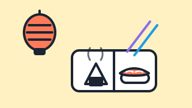
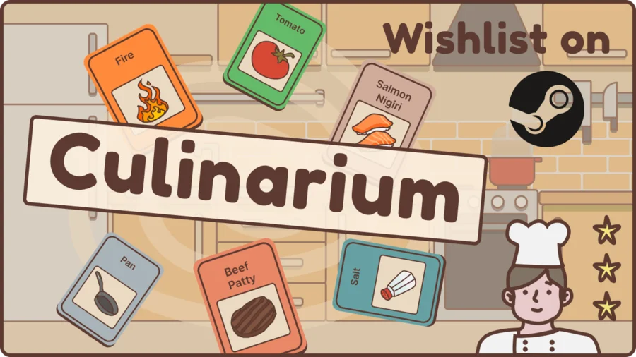

Publié
Designing with AI (O'Reilly)
Un cours vidéo O'Reilly de 3h30 sur l'intégration des outils d'IA dans un vrai flux de travail de design : modèles de diffusion, LLM, prompting et éthique.
Je découvre, j'apprends et je partage.
Designer devenu design thinker devenu créateur. Je navigue entre l'IA, la cuisine et les jeux vidéo, et je construis des choses vraiment utilisables.
Ancien employé de fast-food, designer autodidacte, et toujours en train d'apprendre à voix haute.
J'ai commencé derrière un comptoir de fast-food, j'ai appris le design en autodidacte, et je n'ai jamais vraiment arrêté d'apprendre par moi-même depuis. Pendant des années, j'ai travaillé en freelance sur des projets d'IA et de design, et j'ai animé des ateliers créatifs avec des équipes du monde entier.
Aujourd'hui, je tiens une boutique de cuisine de rue japonaise dans le sud de la France, j'écris sur le design avec l'IA, et je crée de petits jeux vidéo à côté. Ça part un peu dans tous les sens, mais pour moi c'est toujours le même réflexe : je me prends de curiosité pour quelque chose, je m'y plonge jusqu'à ce que ça fasse tilt, puis je partage ce que j'en ai retiré.
J'aime rencontrer de nouvelles personnes et échanger. Si tout cela vous parle, dites-moi bonjour.
Un mélange unique de créativité et de réflexion stratégique, toujours prêt à sortir des sentiers battus.Roel Frissen · Event Design Collective
Trois domaines qui semblent sans rapport, jusqu'à ce qu'on réalise qu'ils reposent tous sur la même curiosité.
Le design, l'IA et l'espace entre les deux. Un cours, un livre en cours d'écriture, et beaucoup de textes.
Explorer →Le Konbini : une boutique et épicerie de cuisine de rue japonaise que j'ai fondée à Alès, en France.
Explorer →De petits jeux ludiques. En ce moment, un jeu de cartes de cuisine appelé Culinarium.
Explorer →Un cours vidéo O'Reilly de 3h30 sur l'intégration des outils d'IA dans un vrai flux de travail de design : modèles de diffusion, LLM, prompting et éthique.
Un livre, en français, sur le design avec l'intelligence artificielle. Écrit aux trois quarts et bientôt disponible.
Des essais et des expériences sur l'IA générative, le design et la créativité, publiés sur Medium et via Madebyai.
Des années à concevoir et animer des ateliers d'innovation à distance pour des équipes du monde entier, avec notamment MURAL et une certification Design Sprint d'AJ&Smart.

La boutique que j'ai fondée à Alès, dans le sud de la France : une épicerie urbaine à la japonaise et un comptoir de street food avec kare pan, sandwichs aux œufs, burgers teriyaki, boissons et un frigo plein de trouvailles. La presse locale l'a décrite comme le nouveau petit coin de Japon de la ville.

Un jeu de gestion de cartes où l'on empile des ingrédients pour créer des recettes et cuisiner des plats. Coupez du saumon, empilez-le avec du riz et du wasabi, et vous obtenez un nigiri. Imaginez Stacklands qui rencontre Overcooked. Le jeu a déjà rassemblé des milliers de souhaits sur Steam.
De plus petites expériences et prototypes que je publie au fil de mon apprentissage du game dev, sous le nom indieben.
Son cours vidéo pour intégrer les outils d'IA dans un vrai flux de travail de design, du prompting jusqu'à l'éthique.
Regarder →L'article du journal local sur Le Konbini, sa boutique de cuisine de rue japonaise, à son ouverture à Alès.
Lire →Un épisode de podcast sur l'usage de l'IA pour repenser notre façon de travailler, et pourquoi l'empathie reste humaine.
Écouter →Comment il a appris la facilitation en autodidacte, des services en restaurant jusqu'aux design sprints.
Lire →Le meilleur moyen de me joindre, c'est LinkedIn. J'aime rencontrer des gens curieux, alors n'hésitez pas.
Me connecter sur LinkedIn